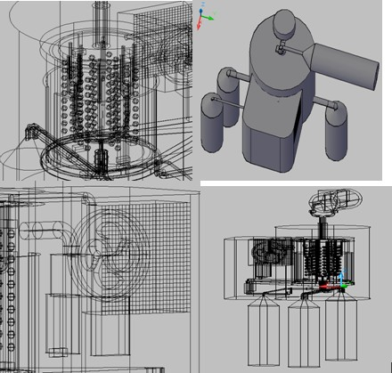
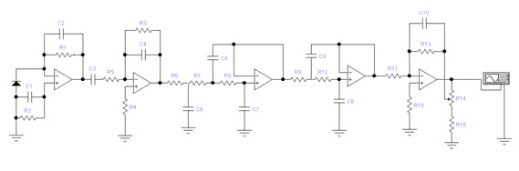
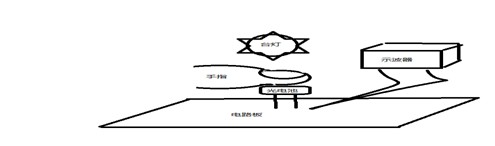
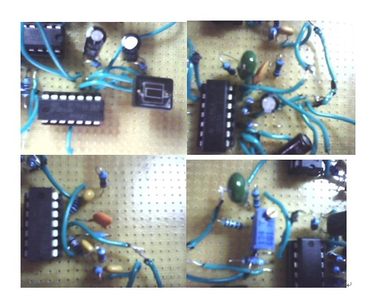

Introduction:
During 01/2008-08/2010, I worked in Professor Xue-Min Wang ‘s biomedical engineering Lab. Professor Wang is also my first academic tutor in my academy life, who is a very good person that taught me methods of research as well as the spirit. I stayed in his lab till most of the projects were finished. In Pro.Wang’s Lab, the tasks were multiply and not limited to certain areas. During that time, I gradually developed the patents that I later applied successfully. The main works are listed as below.The Development of a Traditional Chinese Medicine Sphygmograph
Time: 03/2009-08/2010
Creative point: To fix sensors precisely on the patients due to their different wrist diameters, I proposed new fixation methods to improve the situation, and adopted watchband shaped non-metallic structures after the discussion with my supervisor.
The Construction of Cardiac Impulse Physical Model and Control of Pulsation
Time:09/2010-12/2010
Description: I built up the physical model of cardiac impulse, simulated heart beating period to assist heart diseases treatment and research.
Polymerase Chain Reaction Equipment Structure and Circuit Design
Time: 05/2010-09/2010
Description: This project is to design a new PCR machine with novel technology. The creative points shown below and Fig.1 shows the basic idea of this project.
Fig.1 The figure in four different parts shows the external and internal structure of this new PCR machine design from different view.

Creative points:
- The reactor container with honeycomb structure contained advantages like solidity, big and even heat area, large adding and sampling speed was permitted.
- Temperature principle with microwave heat increased the water molecules energy in liquor from molecular level to complete the technical requirement
- Cooling principle with liquid carbon dioxide had the characters of economic, environmental protection and recycling while meeting the requirement of fast cooling
- Control principle with tiny magnetism to complete mechanical flow enhanced the heat transmitting in liquor and was convenient to recover.
- It can realize the contrast adjust of DICOM images and introduce the image process toolbox of matlab
Design of Optoelectronic Pulse Wave Detecting System in Medical Electronics
Time: 04/2010-07/2010
Description: To realize the functions of pulse wave signals detection and information extraction, the optoelectronic pulse wave detecting system circuit consists of electronic apparatus such as photocells, LM324 and some capacitors and resisters, so as to realize the extraction and amplification of the optoelectronic pulse signal. The detecting of pulse was finished by transferring the current circuit into voltage circuit. The circuit components in the circuit are few, concise and precise, so they will effectively obstruct the interferences caused by component matching and cascading. In the actual operation, the system can achieve the real-time detection of human body pulse, and extract good waveforms to achieve the purpose of the experiment (Fig.2-4).
Fig.2 the general layout of the circuit
 Fig.3 the mimic picture of the design
Fig.4 Physical map of the design